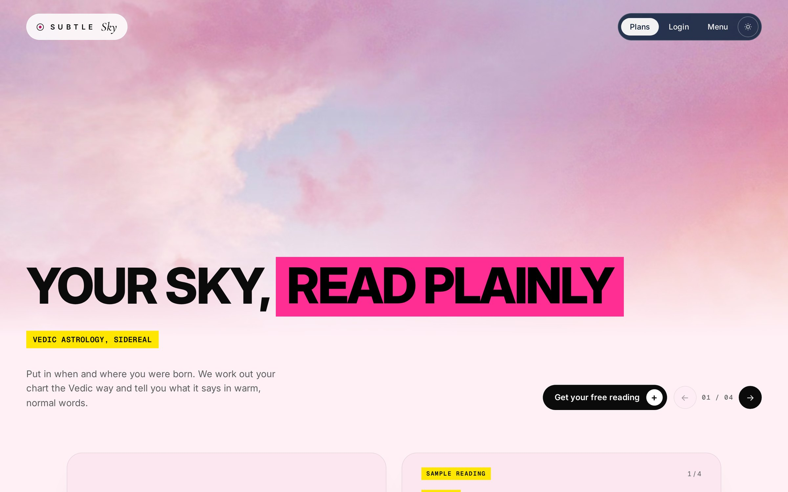

Subtle Sky
Product, design and engineering.

The workBirth chart · Compatibility · Where to Live · Skyprint · SSKY 365 · Learn library
A Vedic astrology product, designed and built end to end.
I designed, built and operate Subtle Sky, a Vedic astrology product that calculates a birth chart from the date, time and place of birth, in the sidereal zodiac with the Lahiri ayanamsa. The basic chart is free. The product also includes traditional compatibility matching, locational astrocartography (Where to Live), Skyprint chart reports, a yearly solar-return guide, and a reference library of signs, nakshatras, a glossary and essays. The site runs on Cloudflare Workers, D1 and R2, with Stripe for payments.